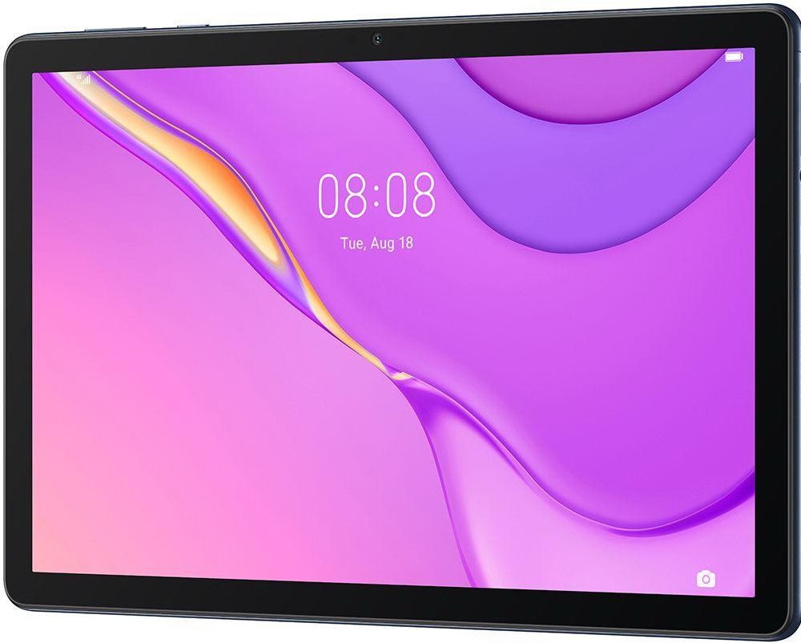

HUAWEI MatePad T10s 3/64GB Wi-Fi Deepsea Blue
HUAWEI MatePad T10s - планшет середнього рівня, який здатний легко стати незамінним мультимедійним інструментом. Пристрій одержав строгий і практичний дизайн, завдяки чому буде гармонійно виглядати і не привертати зайву увагу. У HUAWEI MatePad T10s встановлюється 10,1-дюймовий IPS дисплей з роздільною здатністю 1920х1080 пікселів. Комфортно справлятися з повсякденними завданнями дозволяє 8-ядерний процесор Kirin 710A. Планшет доступний в конфігураціях з 2 або 3 ГБ оперативної пам'яті і 32 або 64 ГБ вбудованого накопичувача. HUAWEI MatePad T10s має вбудований модуль GPS, який дозволяє легко використовувати пристрій як навігатор.
| Виробник: | HUAWEI |
| Лінійка: | MatePad T10s |
| Тип: | Планшет |
| Попередньо встановлена ОС: | Android 10 (EMUI 10.1) |
| Діагональ екрану, дюймів: | 10,1 |
| Роздільна здатність: | 1920 x 1200 |
| Оперативна пам'ять, ГБ: | 3 |
| Вбудована пам'ять, ГБ: | 64 |
| Слот розширення пам'яті: | + MicroSD (до 512 Гб) |
| Процесор: | HUAWEI Kirin 710A |
| Частота, GHz: | 2.0 |
| Ємність батареї, мАг: | 5100 |
| Фронтальна камера, Мп: | 2 |
| Тилова камера, Мп: | 5 |
| Wi-Fi: | Wi-Fi 802.11ac |
| Bluetooth: | + (5.0) |
| GPS: | + (GPS, ГЛОНАСС, Beidou) |
| Зовнішні порти: | USB Type-C |
| Вага, г: | 450 |
| Виробник : | HUAWEI |
| Лінійка: | MatePad T10s |
| Тип: | Планшет |
| Попередньо встановлена ОС: | Android 10 (EMUI 10.1) |
| Діагональ екрану, дюймів: | 10,1 |
| Роздільна здатність: | 1920 x 1200 |
| Тип матриці: | IPS |
| Датчик освітленості: | + |
| Оперативна пам'ять, ГБ: | 3 |
| Вбудована пам'ять, ГБ: | 64 |
| Слот розширення пам'яті: | + MicroSD (до 512 Гб) |
| Процесор: | HUAWEI Kirin 710A |
| Частота, GHz: | 2.0 |
| Кількість ядер: | 8 |
| Графіка: | Mali G51 |
| Вбудовані динаміки: | + (Stereo) |
| Ємність батареї, мАг: | 5100 |
| Фронтальна камера, Мп: | 2 |
| Тилова камера, Мп: | 5 |
| Ethernet: | - |
| Wi-Fi: | Wi-Fi 802.11ac |
| Bluetooth: | + (5.0) |
| GPS: | + (GPS, ГЛОНАСС, Beidou) |
| NFC: | - |
| Зовнішні порти: | USB Type-C |
| Вага, г: | 450 |
| Розміри, мм: | 240,2 x 159 x 7,85 |
| Колір корпусу: | синій |
| Колір лицьової панелі: | чорний |
| Док-станція: | - |
| Стилус в комплекті: | - |
| Товар на сайті виробника: | https://consumer.huawei.com/ua/tablets/matepad-... |